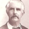
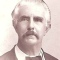

The Five Branches
There are five branches: A, B, C, D and E. Branch B is by far the largest and its
descendants are scattered across the world. As the head of this branch had coincidentally
also five sons with male offspring, this branch is split in the branches B1 through
B5. The first branches (A and B) were partially, respectively almost entirely made
up of Asians mostly due to marriages with Chinese and native women. When there was
no marriage, the created children were almost always recognized and/or legitimatized
or adopted. The branches D and E became completely extinct along the male line.
The
descendants of the branches A and B as far as they were Asian moved back on the social
ladder as a consequence. The children stayed in Indonesia and so they were only attending
native schools. That meant that they came in the labor market in the less-paid jobs
because the better-paid jobs (in the government) were reserved for those who had
received their education in the Netherlands and/or were in the possession of the
Radikaal. By Royal Decision (KB) of 1825 the king could admit persons to higher positions
in the government(the so-called Radikaal system), although they had not studied in
the Netherlands. This admission was given on the basis of their personal education
and background. (In order to protest against this system 215 persons signed by a
petition of May 25th, 1848 an address to the King, as a result of a meeting in The
Harmony in Batavia. Among the signatories were three of the five sons). The Radikaal
system was abolished in 1864. Henceforth there was a public examination “the Great-Civil
Servant-Examination” which was held annually both in The Hague and in Batavia.
At that time there were close ties between the branches. Apart from the fact that
some nephews and nieces married with one another, they were often staying at each
other. Several children were born at the home of a brother or sister of their parents.
There was also a joint cemetery.
W. Walraven described in the book Letters life of
the Dutch families in the former Dutch East Indies, where he is saying on p. 818:
'Some people are as family very interesting and I had hoped that Eddy (du Perron,
author of Het Land van Herkomst, published in 1935) would write again a kind of Forsythe
saga about them, e.g. on the Van Motmans or such a family "
The family has gone into the history as a family of lords of a manor and planters. Although that applies to all branches, branch C crowned all because his planters followed this profession for five generations. Some branches fared better than another, so people talked of golden and silver branches.
Known VanMotmanlanden in the vicinity of Buitenzorg were Djamboe, Dramaga, Djasinga,
Bolang, Roempin, Trogong, Semplak, Kedong Badak, Tjikoleang and Nanggoeng. In Bantam
Tjikandi Oedik and Tjikandi Ilir and in the Preanger Pasir Langkap and Goenoeng Rosa.
We will encounter them later several times. From different other plantations such
as Tjampea and Pondok Gedeh a Van Motman was tenant, or a member of the family was
manager.
The personal details of members of all branches are primarily derived from a publication
of Mr PC Bloys van Treslong Prins in the Indische Navorscher and from the book re
Willem Vincent Helvetius van Riemsdijk. Those of the branches A and B are mainly
supplemented with data from the Indisch Familie Archief, newspaper cuttings, in memoriam
cards, information of the members of the branches themselves and the Internet. Regarding
the last-mentioned data a reservation is to be named. Are all children recognized
by their father and is it rightly that they use the name of Van Motman?
Country Estate Great Dramaga


 
